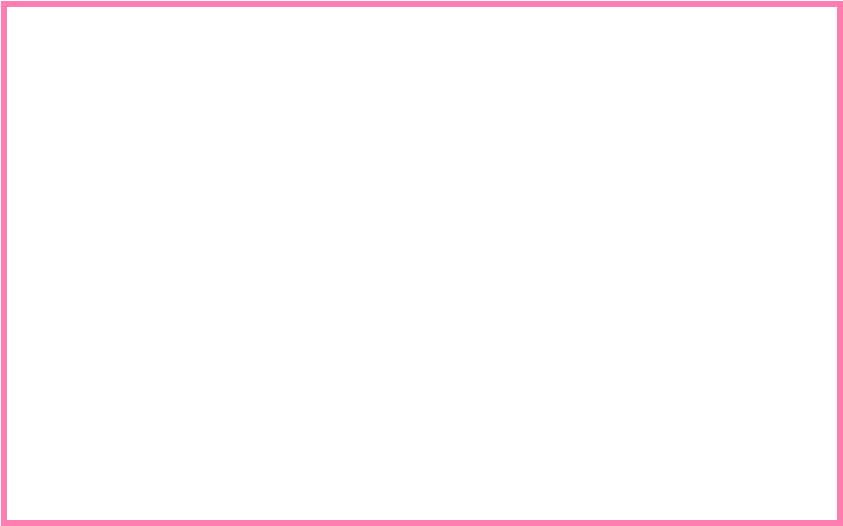

Spaghettis was created in the late 1960’s by Dario Fontanella, who is now famous for making creative variations of ice cream (Gardener) . His father moved from Italy to Germany in 1931, where they set up their ice cream parlour in Mannheim, the birthplace of spaghettieis (Gardener).
Spaghettis is made by putting vanilla ice cream into a chilled potato ricer, to resemble noodles. Red strawberry sauce is then poured overtop to resemble spaghetti sauce, and white shaved chocolate sprinkled to resemble parmesan cheese (Gardener).Watch the video to learn more about Spaghettieis!Fig.1.Fig.2.
